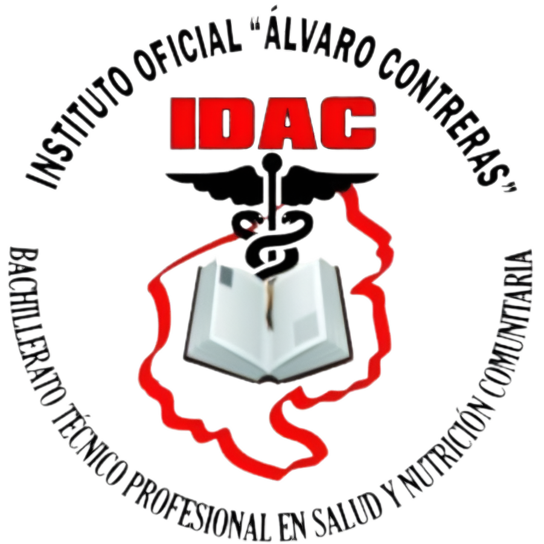

BTP En Salud y Nutricion
Inicio
Sobre la Carrera
Plan de Estudio
Galeria
Testimonios

¡MAS QUE UNA CARRERA UNA FAMILIA!
Esta carrera te permite obtener los conocimientos, habilidades, destrezas, actitudes y comportamientos para la atencion primaria en Salus y Nutricion Comunitaria.